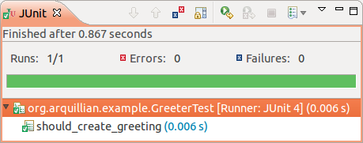

http://arquillian.org/community
Es una plataforma de tests extensible para la JVM creada por la gente de JBoss.
Es un proyecto open source.
http://arquillian.org/invasion
http://arquillian.org/invasion/spread
Permitir a los desarrolladores crear fácilmente tests automáticos de integración, funcionales y de aceptación para los middleware Java.
http://arquillian.org/invasion
arquillian se encarga de la toda la fontanería, como la administración del contenedor, el despliegue y la inicialización de los frameworks para que te puedas concentrar en la tarea de escribir tus tests.
http://arquillian.org/invasion
arquillian cubre todos los aspectos de la ejecución de los tests:
http://arquillian.org/invasion
http://arquillian.org/invasion
@RunWith(Arquillian.class) // (1)
public class GreeterTest {
@Deployment // (2)
public static JavaArchive createDeployment() {
return ShrinkWrap.create(JavaArchive.class)
.addClass(Greeter.class)
.addAsManifestResource(EmptyAsset.INSTANCE, "beans.xml");
}
@Inject // (3)
Greeter greeter;
@Test // (4)
public void should_create_greeting() {
assertEquals("Hello, Earthling!", greeter.greet("Earthling"));
}
}
http://arquillian.org
@RunWith(Arquillian.class) // (1)
public class GreeterTest {...
@Inject
Greeter greeter;
@Test // (4)
public void should_create_greeting() {
assertEquals("Hello, Earthling!", greeter.greet("Earthling"));
}
greeter que es una instancia inyectada, pero... @Deployment
public static JavaArchive createDeployment() {
return ShrinkWrap.create(JavaArchive.class)
.addClass(Greeter.class)
.addAsManifestResource(EmptyAsset.INSTANCE, "beans.xml");
}

¡El resultado se muestra en nuestro ejecutador de tests!
arquillian nos facilita aprender a utilizar los diferentes middlewares. Nos proporciona maneras de probar las funcionalidades de los middlewares y asegurarnos de que se ajustan a nuestras necesidades.
<dependencyManagement>
<dependencies>
<dependency>
<groupId>org.jboss.arquillian</groupId>
<artifactId>arquillian-bom</artifactId>
<version>1.0.2.Final</version>
<scope>import</scope>
<type>pom</type>
</dependency>
</dependencies>
</dependencyManagement>
<dependency>
<groupId>junit</groupId>
<artifactId>junit</artifactId>
<version>4.8.1</version>
<scope>test</scope>
</dependency>
<dependency>
<groupId>org.jboss.arquillian.junit</groupId>
<artifactId>arquillian-junit-container</artifactId>
<scope>test</scope>
</dependency>
<dependency>
<groupId>org.jboss.as</groupId>
<artifactId>jboss-as-arquillian-container-remote</artifactId>
<version>7.1.1.Final</version>
<scope>test</scope>
</dependency>
Ejemplos
Q & A
| Table of Contents | t |
|---|---|
| Exposé | ESC |
| Full screen slides | e |
| Presenter View | p |
| Source Files | s |
| Slide Numbers | n |
| Toggle screen blanking | b |
| Show/hide slide context | c |
| Notes | 2 |
| Help | h |